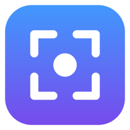
Ctrl+Shift+5 — и снимок уже в чате
SnapDesk — скриншоты и запись экрана для Windows, как Cmd+Shift+5 в macOS. Область, окно или весь экран — сразу в буфере обмена и в папке, а миниатюру можно перетащить в Discord или Telegram.
Скачать SnapDesk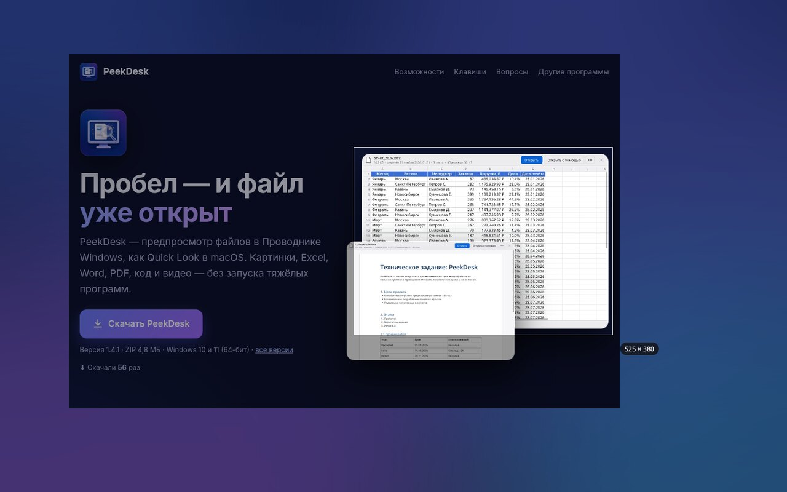
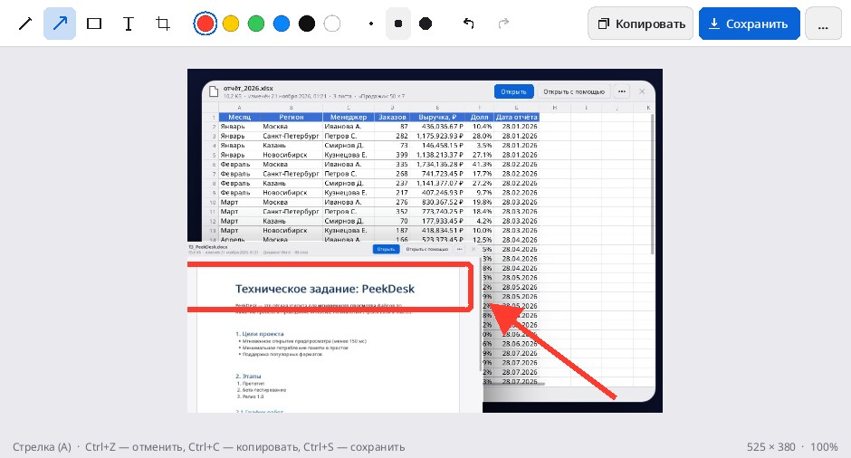
Что умеет
Бесплатно · без установки · без рекламы и без слежки · обновляется сама
Панель снимков
Ctrl+Shift+5 — маленькая панель внизу экрана: область, окно, весь экран или запись. Для каждого режима — своя горячая клавиша.
Область
Перекрестье с размером, лупа 8× с цветом под курсором, стрелки — точная подводка. Экран замирает в момент нажатия — меню и подсказки не пропадают.
Окно
Наведите и щёлкните: снимается само окно, даже если его перекрывают другие.
Запись экрана
Область, окно или экран в MP4 (H.264) со звуком системы и микрофоном. 30 или 60 кадров, аппаратный кодер видеокарты, если он есть.
Миниатюры стопкой
До 5 снимков в углу экрана. Щелчок — разметка, перетаскивание — файл в Discord, Telegram или папку, правый щелчок — меню.
Разметка
Перо, стрелка, прямоугольник, текст, обрезка, 6 цветов, отмена и повтор. Копировать или сохранить — одной кнопкой.
Сразу везде
Снимок мгновенно в буфере обмена и в папке «Изображения\Screenshots» (PNG). Ролики — в «Видео\Screen Recordings».
Лёгкая
В простое не тратит процессор совсем: ни таймеров, ни хуков клавиатуры. Графика и кодировщик загружаются только на время снимка.
Всё отключается
У каждой функции свой переключатель. Светлая и тёмная тема, плавные анимации, автозапуск. Без рекламы и без слежки.
Как это выглядит
Настоящие скриншоты SnapDesk
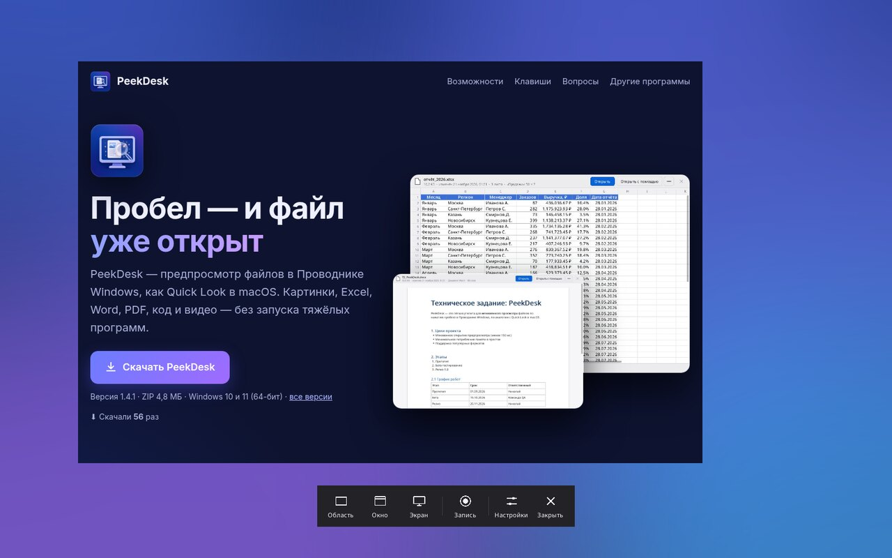
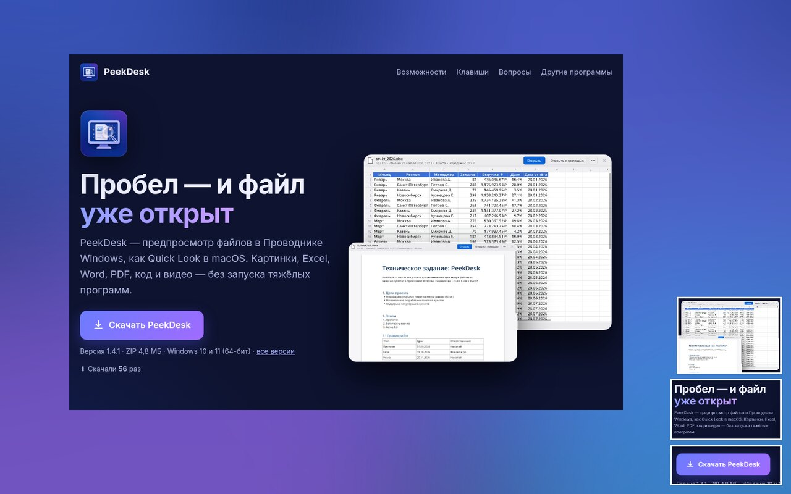
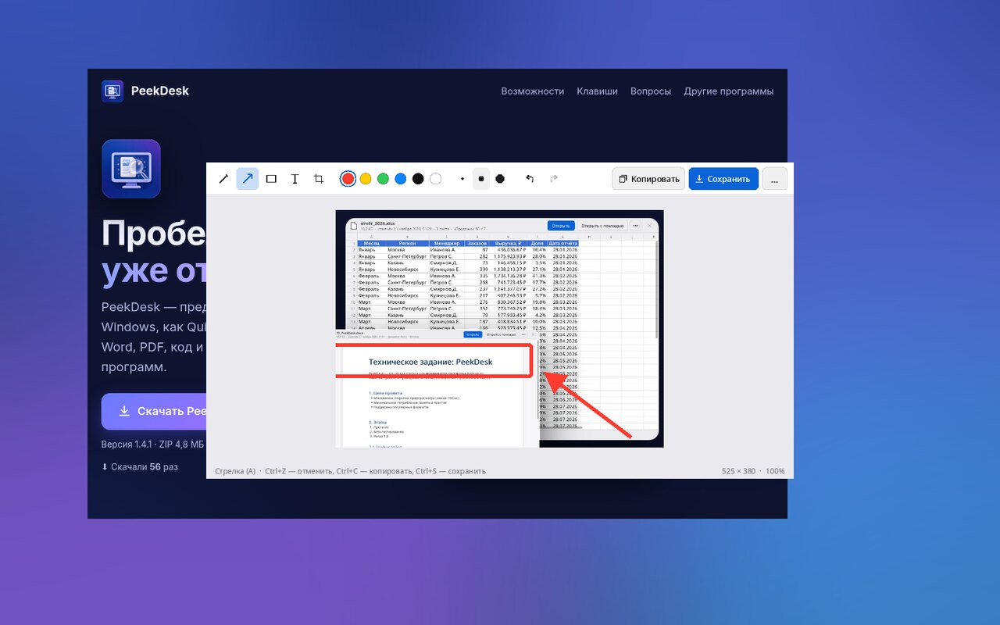
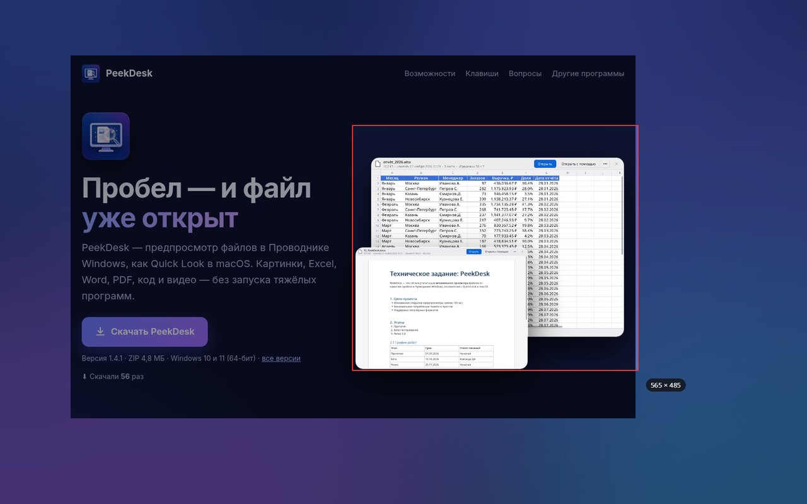
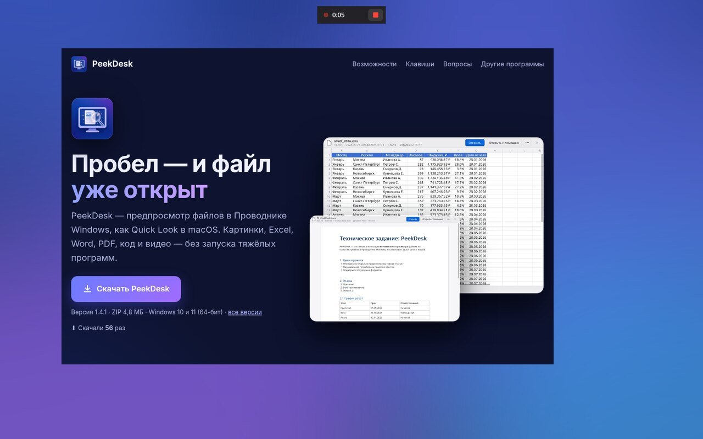
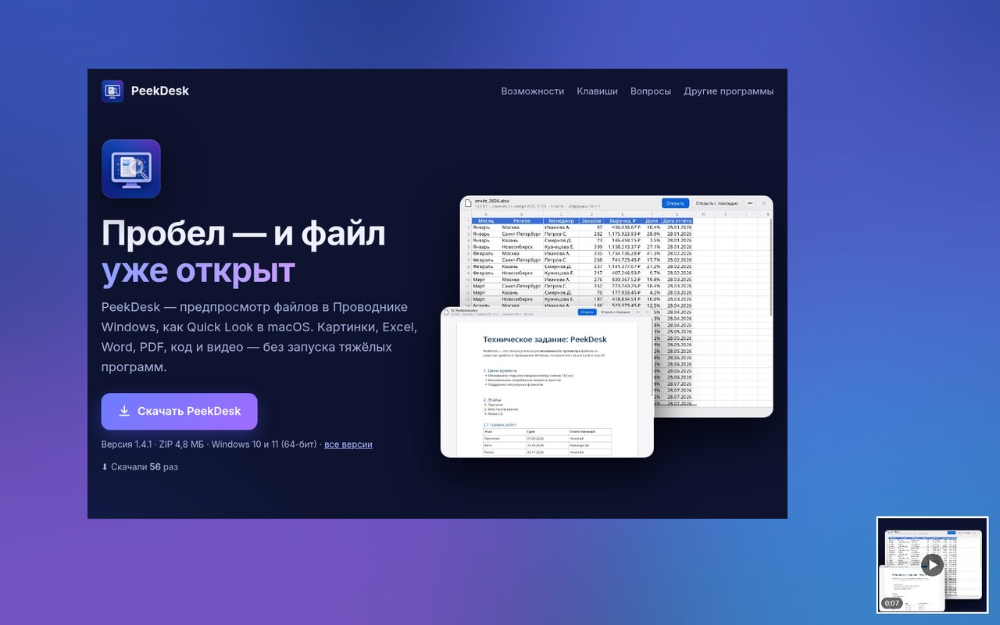
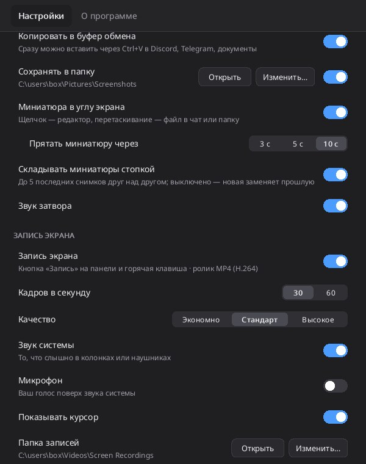
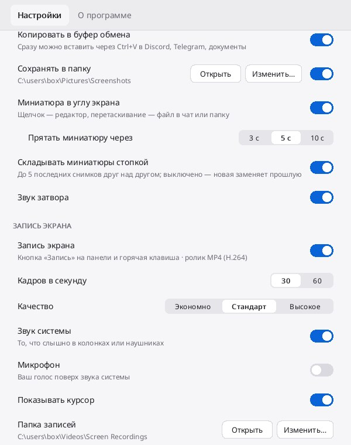
Клавиши
Все сочетания меняются в настройках, любое можно выключить
| Ctrl + Shift + 5 | панель снимков (на панели 1 2 3 — область, окно, экран, 4 или R — запись) |
| Ctrl + Shift + 4 | сразу выделить область |
| Ctrl + Shift + 6 | снимок окна — щёлкните по окну |
| Ctrl + Shift + 3 | снимок всего экрана |
| Ctrl + Shift + 7 | запись экрана: область, щелчок — окно, F — весь экран; та же клавиша — стоп |
| Пробел · стрелки · F · Esc | при выделении: режим окна, точная подводка, весь монитор, отмена |
| P A R T C | разметка: перо, стрелка, прямоугольник, текст, обрезка |
| Ctrl+Z · Ctrl+C · Ctrl+S | разметка: отменить, копировать, сохранить |
Как установить
- Скачайте SnapDesk-win64.zip.
- Распакуйте в постоянную папку, например
Документы\SnapDesk. - Запустите SnapDesk.exe — значок появится в трее. Нажмите Ctrl+Shift+5.
- Если Windows покажет «Система Windows защитила ваш компьютер» — «Подробнее» → «Выполнить в любом случае».
Требования: Windows 10 (версия 1903 или новее) или Windows 11, 64-бит. Для записи экрана в выпусках «N» нужен бесплатный «Пакет дополнительных компонентов мультимедиа».
Вопросы
Почему SmartScreen предупреждает?
Программа новая и пока не подписана платным сертификатом. Скачивайте SnapDesk только со страницы выпусков на GitHub — рядом с архивом лежит файл .sha256 с контрольной суммой.
Не будет ли тормозить компьютер?
Нет. В трее SnapDesk ничего не делает и просыпается только по горячей клавише. Графика и кодировщик видео загружаются на время снимка или записи и выгружаются после.
Куда сохраняются снимки и ролики?
Снимки — в «Изображения\Screenshots», ролики — в «Видео\Screen Recordings». Папки меняются в настройках; сохранение можно выключить — тогда снимок остаётся только в буфере обмена.
Попадёт ли кнопка «стоп» в запись?
Нет. Кнопка «стоп» и миниатюры скрыты от записи (Windows 10 2004 и новее), а перед снимком SnapDesk сам убирает свои окна с экрана.
Ctrl+Shift+5 занято другой программой
Откройте настройки, щёлкните по сочетанию и нажмите новое. SnapDesk сам предупредит, если сочетание уже занято.
Программа что-нибудь отправляет?
Нет. Снимки и ролики остаются только на вашем компьютере. В интернет SnapDesk обращается лишь к GitHub за обновлениями — это можно выключить. На этом сайте нет счётчиков и аналитики.
Другие программы от Nikolini
Маленькие бесплатные программы для Windows


Обсуждение
Предложить идею · Сообщить о баге · Все обсуждения
Вопросы, идеи и новости о выпусках — в обсуждениях проекта на GitHub.